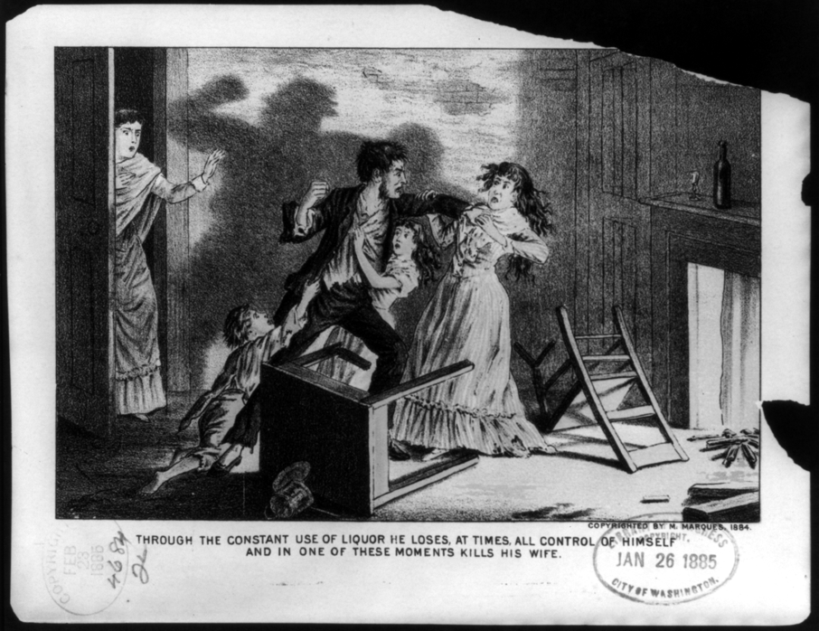
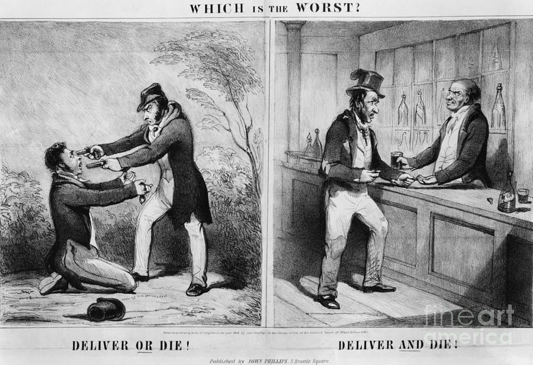
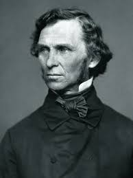
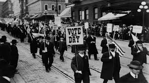
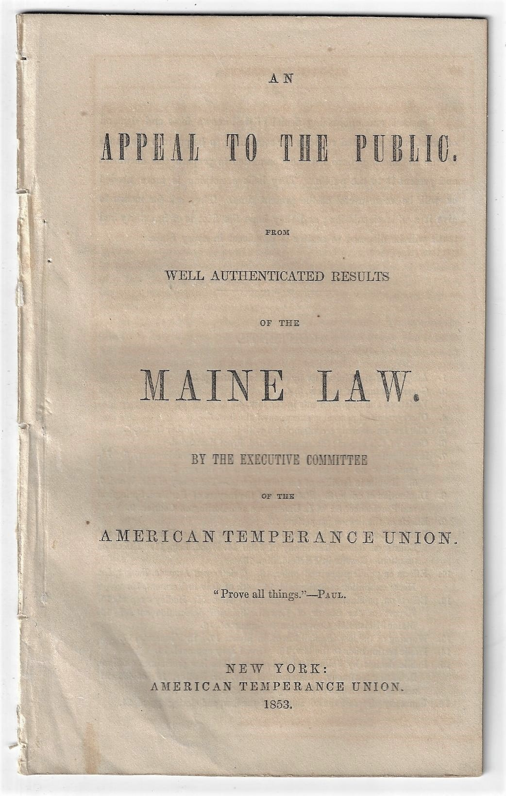

Ten key figures of the Temperance crusade, hover over each card to reveal their stats

Lyman Beecher
- BornOct 12, 1775
- DiedJan 10, 1863
- PlaceNew Haven, CT
- EducationYale College, 1797
- RolePresbyterian Minister
- Children13 (incl. H. Beecher Stowe)
✦ His daughter Harriet Beecher Stowe wrote Uncle Tom's Cabin

Neal Dow
- BornMar 20, 1804
- DiedOct 2, 1897
- PlacePortland, Maine
- EducationFriends School
- RoleMayor of Portland, ME
- AchievementMaine Law, 1851
✦ Ran for U.S. President on the Prohibition Party ticket in 1880

Frances Willard
- BornSep 28, 1839
- DiedFeb 17, 1898
- PlaceChurchville, NY
- EducationNorthwestern Female College
- RoleWCTU President, 1879–98
- Motto"Do Everything"
✦ First woman to have a statue in the U.S. Capitol's Statuary Hall

Carry Nation
- BornNov 25, 1846
- DiedJun 9, 1911
- PlaceGarrard Co., KY
- 1st HusbandCharles Gloyd (alcoholic)
- TacticHatchet attacks on saloons
- Arrests30+ for "hatchetation"
✦ She sold souvenir hatchets to pay her bail fines

Eliza Thompson
- BornAug 24, 1816
- DiedNov 3, 1905
- PlaceHillsboro, Ohio
- FamilyDaughter of Gov. Allen Trimble
- RoleLed 1873–74 Women's Crusade
- TacticPray-ins at saloon doorsteps
✦ Her 1873 "Crusade" inspired founding of the WCTU the following year

John B. Gough
- BornAug 22, 1817
- DiedFeb 18, 1886
- PlaceSandgate, England
- OrganizationWashington Temperance Soc.
- Lectures~9,000 across career
- Audience~9 million total listeners
✦ Was himself a relapsed alcoholic, making his story all the more dramatic

Anti-Saloon League
- Founded1893, Oberlin, Ohio
- LeaderWayne Wheeler
- MethodSingle-issue lobbying
- GoalConstitutional prohibition
- Achievement18th Amendment, 1919
- AlliesProtestant churches, WCTU
✦ Called "the most effective pressure group in American history"

Washington Temperance Soc.
- Founded1840, Baltimore, MD
- Founders6 working-class men
- MethodPersonal testimony meetings
- Growth600,000 members by 1841
- TacticPledge-signing rallies
- LegacyPrecursor to AA movement
✦ Used emotional testimonials — essentially invented the recovery meeting format

18th Amendment
- ProposedDec 18, 1917
- RatifiedJan 16, 1919
- Enforced byVolstead Act, 1919
- ProhibitedManufacture & sale of liquor
- Repealed by21st Amendment, 1933
- Duration13 years
✦ Only constitutional amendment ever to be repealed in U.S. history

Women's Christian Temp. Union
- Founded1874, Cleveland, OH
- SymbolWhite ribbon
- Motto"Home Protection"
- Peak Membership245,000 (1911)
- Key IssueLinked temperance & suffrage
- MagazineThe Union Signal
✦ Largest women's organization in U.S. history at its peak
Twelve term crossword
Two period cartoons

1. List the objects or people you see in the cartoon.
A man attacked his wife and his child, with a broken chair and tables on the ground.
2. Identify the cartoon caption and/or title.
"Through the constant use of liquor he loses, at times all control of himself and in one of these moments kills his wife."
3. Locate three words or phrases used by the cartoonist to identify objects or people within the cartoon.
1. "Constant use of liquor"
2. "Loses all control"
3. "Kills his wife"
4. Record any important dates or numbers that appear in the cartoon.
It has a stamp of January 26 1885, but doesn't have much meaning to the cartoon.
5. Which of the objects on your list are symbols?
Liquor bottles, Broken Furniture, Violent Husband
6. What do you think each symbol means?
Liquor bottles: addiction
Broken Furniture: chaos and destruction
Violent Husband: harm and consequences due to alcohol
7. Which words or phrases in the cartoon appear to be the most significant? Why do you think so?
"Losses control" and "kills his wife" are the most significant since it really shows the consequences of alcohol.
8. List adjectives that describe the emotions portrayed in the cartoon.
Violent, Fearful, Chaotic, Tragic
A. Describe the action taking place in the cartoon.
A man violently attacks his wife while the child is trying to stop him.
B. Explain how the words in the cartoon clarify the symbols.
The caption explains the violence caused by alcohol.
C. Explain the message of the cartoon.
Alcohol leads to loss of self-control and how alcohol leads to violence.
D. What special interest groups would agree/disagree with the cartoon's message? Why?
Agree: Temperance activists would agree since they are against the use of alcohol.
Disagree: Alcohol companies and bar owners would disagree since they are the ones who profit from the alcohol selling.

1. List the objects or people you see in the cartoon.
In the left panel of the cartoon we see a robber point a gun at a man that is kneeling down. At the right panel we see a man at the bar and the bartender is giving him a drink.
2. Identify the cartoon caption and/or title.
The title of the political cartoon is "Which is Worst."
3. Locate three words or phrases used by the cartoonist to identify objects or people within the cartoon.
1. "Deliver or Die" at the left panel which shows a guy kneeled down by gunpoint.
2. "Deliver and Die" at the right panel shows a guy at a bar, drinking alcohol which will lead to his death.
3. "Which is the Worst" as the lead title, saying that drinking is as bad as getting robbed with a gun.
4. Record any important dates or numbers that appear in the cartoon.
No important dates mentioned.
5. Which of the objects on your list are symbols?
Gun, Alcohol, The bar, The man being shot, The man drink
6. What do you think each symbol means?
Gun: symbolizes violence and sudden death
Alcohol: symbolizes addiction and self destruction
The bar: symbolizes the alcohol industry
The man being shot: instant death
The man drink: slow death by alcoholism
7. Which words or phrases in the cartoon appear to be the most significant? Why do you think so?
"Deliver and Die" and "Deliver or Die" are the most significant phrases because they express the claim that alcohol is just as bad as getting shot, and both will lead to death.
8. List adjectives that describe the emotions portrayed in the cartoon.
Violent, Tense, Dark, Fearful
A. Describe the action taking place in the cartoon.
On the left, man is being held at gun point and seen in a violent situation. On the right, man is buying a drink of alcohol at a bar.
B. Explain how the words in the cartoon clarify the symbols.
"Deliver and Die" and "Deliver or Die" show that the left side shows instant death and on the right it represents eventual death by alcohol.
C. Explain the message of the cartoon.
The message of the cartoon is that alcohol is deadly and harmful, which slowly kills you.
D. What special interest groups would agree/disagree with the cartoon's message? Why?
Agree: The Temperance movement and religious groups would support the cartoon since they believed alcohol caused violence and poverty.
Disagree: Alcohol companies and bar owners would disagree since they are the ones who profit from the alcohol selling.
Click on the posts to view details
Joint petition for national prohibition and women’s rights.
Associates:
- @carry_nation (radical enforcer)
- @frances_willard (WCTU leader)

@nealdow (Maine Law advocate)



Rally tonight at 7PM at the town hall. 3 associates are speaking: @carry_nation @frances_willard @nealdow.
End the saloon culture.
Associate highlight: @carry_nation is leading the street campaign today. Keep the momentum going, petitions now at City Hall.
Historic milestone: Maine Law anniversary! We are building toward a national vote for prohibition. Share this report with your community.
One for and one against Temperance